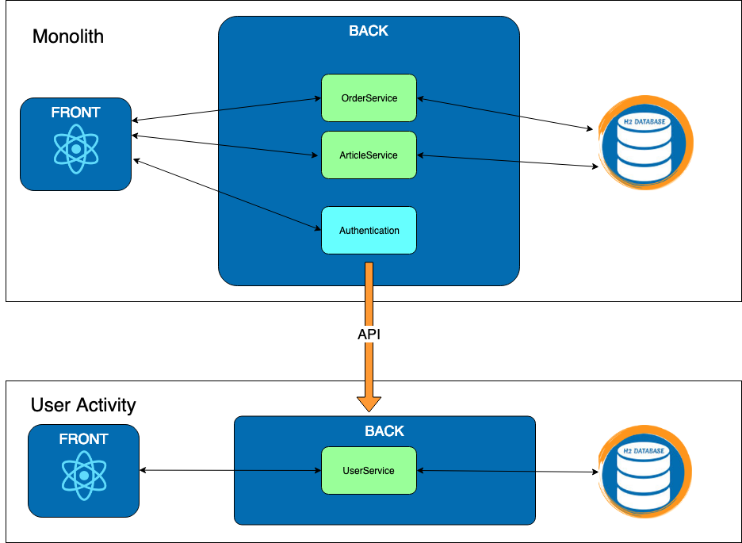
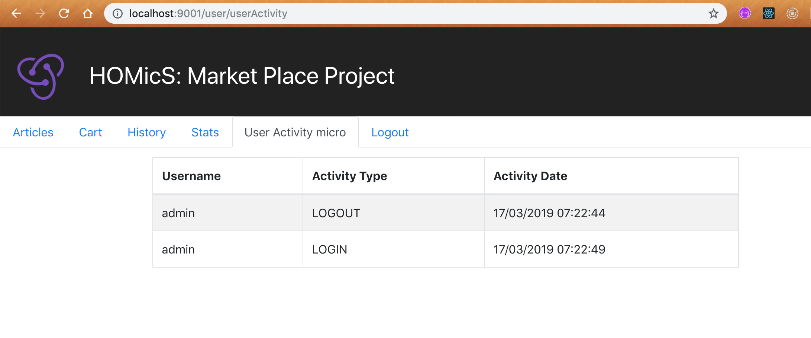

Exercise 1 : User Activity
Previously on HOMicS -> Exercise 0: Monolith
Context
In our application, we track user activity on log in and log out. This functionality is already implemented in the monolith codebase.
In WebSecurityConfig, you can find two classes CustomizeAuthenticationSuccessHandler and
CustomizedLogoutSuccessHandler. Those classes implement some Spring Security interfaces to define a strategy used to
handle a successful user authentication or logout. In our case, they call the UserActivityService which save the event
in database through it UserActivityRepository.
you can read more about spring security
AuthenticationSuccessHandlerdocumentation here
The front fetches those events for display through an internal API in UserActivityInternalController.
Goal
We are going to create a new service in charge of user activities. Let's be inventive and call it: user-activity. It will store all users activities in its own database and display the information on a dedicated page. The monolith will call this micro-service via API to notify on a success login or success logout.

At your keyboard
-
Setup the projects
We are going to go back and forth between two projects: monolith and user-activity. First of all, clone the existing user-activity project from github via this command:
git clone https://github.com/homics/user-activity.gitTODO are left in the code that you will need to fill.
Change the branch on the monolith to
exo1-user:monolith $ git checkout exo1-user Do not forget to recompile the full project via
Do not forget to recompile the full project via mvn clean installto compile the front especially if you use an IDE. -
Edit user-activity application.yaml
You need to configure the
application.yamlso the microservice has a database, and run on port 9001.Check the
application.yamlin the monolith to learn how to specify your database. Name the databasedbuser.For the port, google is your friend.
-
UserActivityApiController&UserActivityInternalControllerComplete the TODO in the two controller classes.
For
UserActivityInternalController, you need to add a post API to register the activity sent by the monolith. The DTO is already implemented: UserActivityDto. Use it. -
UserActivityServiceComplete the TODO in
UserActivityService.You are asked to save and fetch user activities coming down from your controllers. Nothing fancy...
-
Clean monolith:
As a final step, you will clean the monolith to remove any code related to the user activity.
 We took care of the front for you.
We took care of the front for you.Yeah, the monolith is started to get thinner. But it's not over since the monolith does not speak with user-activity yet.
On the monolith, you need to call the microservice on each login and logout success. Edit the file
CustomizeAuthenticationSuccessHandlerandCustomizedLogoutSuccessHandler. You should use this syntax :restTemplate.postForEntity(USER_ACTIVITY_URL, userActivity, Void.class);
Great, you just created your first microservice and connected it to your monolith. Not too bad.
Database
You can access the database console via the following url.
Verification
To verify that user-activity is well implemented, launch both applications:
# Run monolith project
monolith$ mvn spring-boot:run
# Run user-activity project
user-activity$ mvn spring-boot:run
Access and login to the monolith. Navigate to the User Activity Micro tab and you should see the same table than before.

Troubleshooting
If you have a 404 error, your front might not be compiled on your microservice. You remember our reminder on compiling it. Let's do it again here and run
mvn clean install.